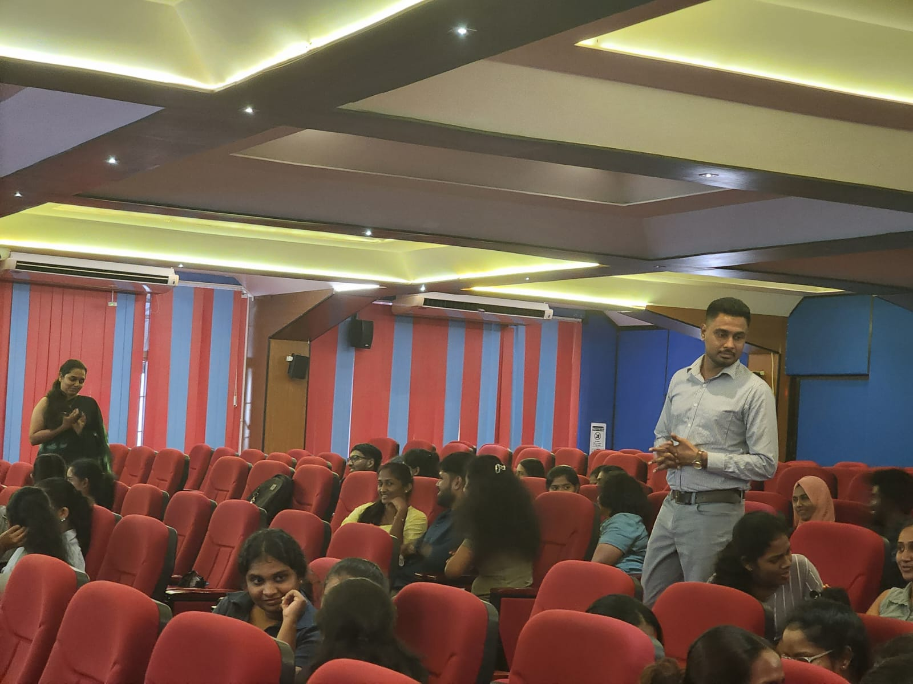

LEADERSHIP / IMPACT
Leadership through practice.
Educational leadership, professional development and community engagement.

PROFESSIONAL DEVELOPMENT
Negotiation, Communication & Conflict Management
TAO · Kurunegala · 2026
View project ↗
HIGHER EDUCATION
Negotiation & Peacebuilding
University of Kelaniya · Sri Lanka
View project ↗
YOUTH DEVELOPMENT
Developing 21st-Century Skills
Sri Lanka · May 2024
View project ↗VOLUNTEER COUNSELLING
Psychosocial Support & Rehabilitation
Ambepussa Rehabilitation Centre · Sri Lanka
View project ↗Educational leadership
My professional practice includes English language teaching and departmental leadership.
Community engagement
I am interested in expanding opportunities for young people to develop confidence, communication and essential life skills.